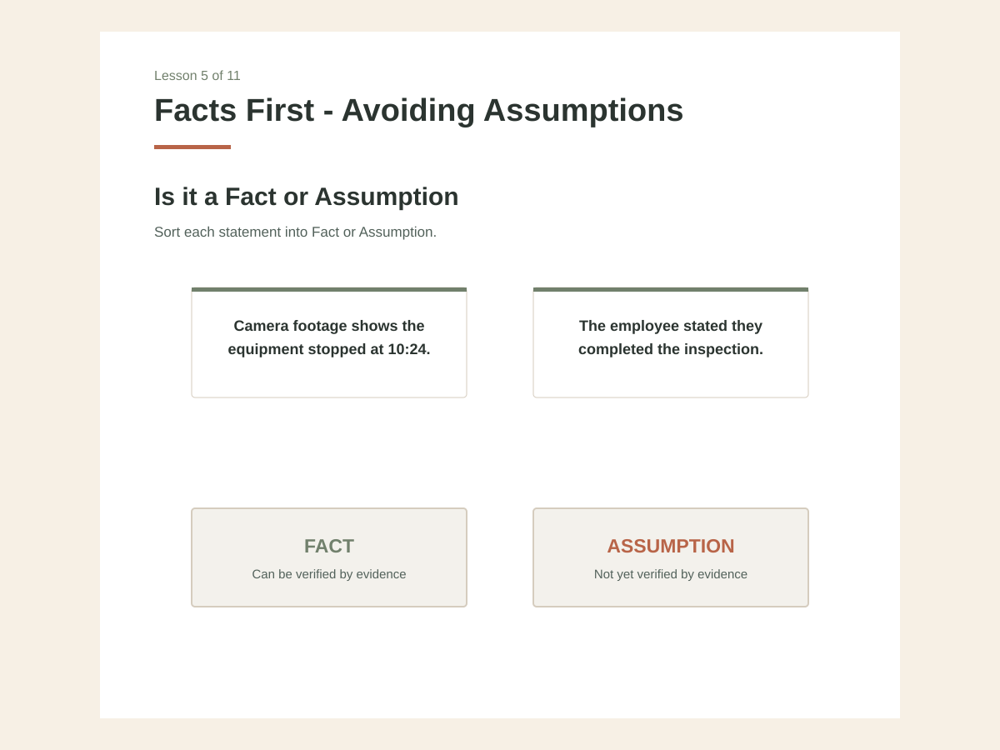

Digital learning
Fact or assumption practice.
Learners sort short statements according to what the evidence actually supports. The public reconstruction keeps the same Rise interaction structure and information hierarchy.
Changed for public use: client branding, palette, names, and proprietary examples.